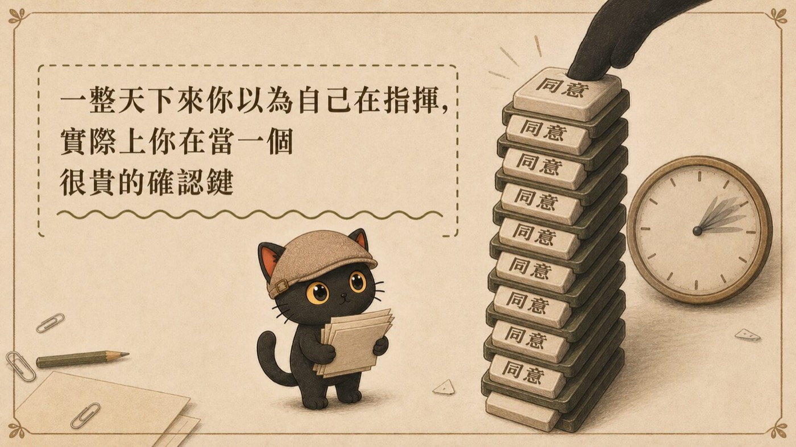
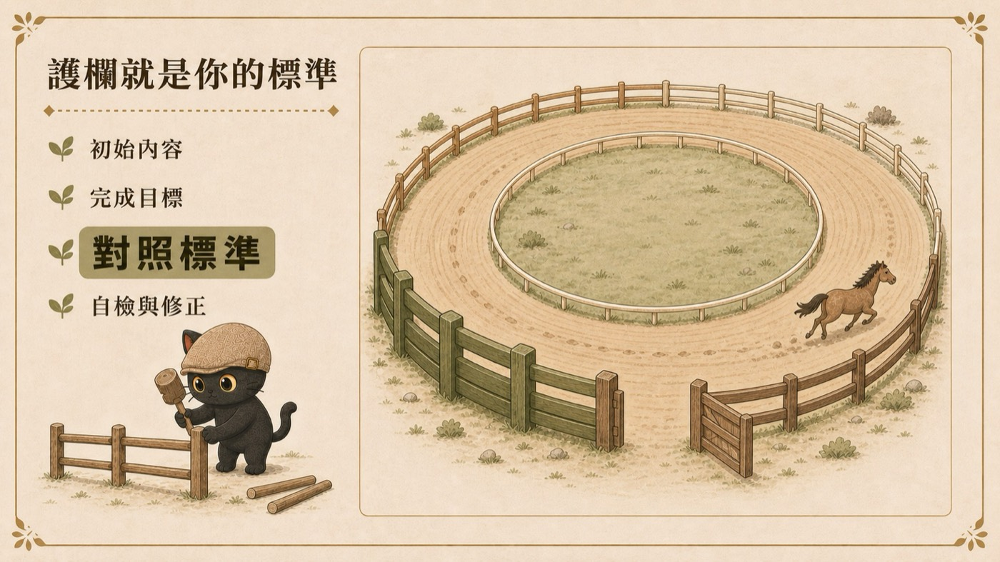
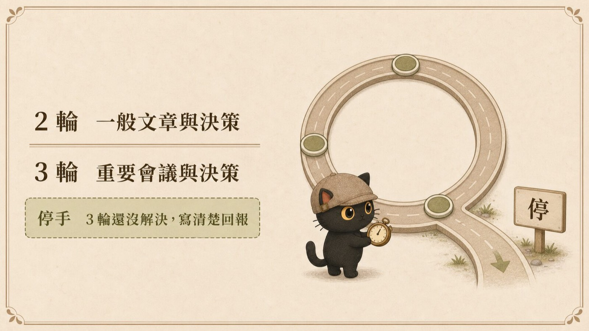

AI 幫你做事的時候每一步都停下來問，這件事有兩種解法。一種是繼續盯著每一步看，這叫駕馭工程。另一種是把你的標準一次寫清楚，讓它自己跑完再回來找你，這叫迴圈工程。多數人卡在中間：知道應該要放手，但不知道放到哪裡才不會出事。這篇講那一步怎麼跨，以及我到今天仍然不放手的四件事。
- 已經在用 AI 代理做事，但每天花很多時間在按確認，按到自己都不看了
- 想放手讓 AI 自己跑完，又怕它跑歪、跑爆額度、跑到不可收拾
- 聽過駕馭工程跟迴圈工程這兩個詞，不確定差在哪、自己現在站在哪一站
- 一個判斷授權範圍的方法：哪些事可以交出去、哪些事永遠留著
- 三行可以直接貼進規則檔的護欄，完成條件、檢查方式、停止條件
- 我自己的圈數設定與實測數字，還有我到現在仍然坐在馬背上的四件事
一、先說清楚駕馭工程在解什麼問題
駕馭工程這個說法大概是 2025 年底到 2026 年初出現的。那個時間點大家發現一件事：模型已經很強了。
強到什麼程度？強到大家問的問題換了一個。以前問「它會不會」，現在問「它會照我的意思做嗎」。
所以這一站的做法都圍繞著控制：把你的意圖講清楚、把底線寫出來、把每一步的判斷交代明白。做得好的話，AI 的產出會非常接近你要的東西。
這個詞的原始定義
駕馭工程的英文是 Harness Engineering，harness 原意是韁繩。OpenAI 2026 年的說法是：Agent 等於 AI 模型加上駕馭工程，模型是大腦，駕馭工程是控制大腦的那套工程。
對非工程師來說，這套工程包含三件事：設計環境（你的資料夾結構）、定義意圖（每個資料夾拿來做什麼）、建立迴圈（讓 AI 照著你的路徑跑）。
回到代價的部分。
二、駕馭工程的代價：你人得一直待在馬背上

騎馬要人在馬背上。這句話翻譯成日常，就是每一步都要你在場。
用過 AI 代理的人對這個狀態很有感：確認下一步、確認下一步、要不要執行、要不要覆寫。一整天下來你以為自己在指揮，實際上你在當一個很貴的確認鍵。
更值得注意的是第二個代價。當同一個確認動作重複到第五次、第十次，你已經不會認真看了，你只是把它按掉。這時候那道確認關卡其實已經失效，它變成儀式，失去了把關的作用。
所以真正的問題不是要不要監督，是監督應該花在哪裡。
三、那個關鍵問題：這件事我已經回答過五次了
我在講座上講過一段，那是我自己跨過去的那一步：
這句話有兩層。第一層是抱怨，第二層才是重點：如果我願意授權，代表這件事有一個我心裡已經有答案的標準。那個標準沒有被寫出來，所以它每次都得問。
一個真實的例子
八月我朋友遇到一件事，剛好可以說明。
他做了一套文件系統，裡面 16 個人各一份。他改完其中一份，叫 Codex 把剩下 15 份照樣改。Codex 改到一半停下來問他：每份文件裡各人自己的那些內容要不要留。
朋友覺得 Codex 蠻聰明的，還會自己發現問題。
我聽完的第一個念頭不太一樣。16 個人本來就 16 個名字，每個人當然不一樣，這種事還要停下來問嗎。
但我很快改口了。它敢舉手是對的，沒給它規矩的人是我。
所以正確的回應不是誇它也不是嫌它，是給它一條規矩：
這一句話講出口的那一刻，你就從駕馭工程走進迴圈工程了。差別只在於，你把一次性的回答，變成一條下次會被執行的規則。
四、迴圈工程：與其坐在馬背上，不如蓋一座馬場

實際上要交代給 AI 的有四件事：
| 要交代什麼 | 講白話 |
|---|---|
| 初始內容 | 我給你的材料是什麼 |
| 完成目標 | 做出來要長什麼樣 |
| 對照標準 | 用什麼來判斷做完了沒（這一項最關鍵） |
| 自檢與修正 | 做完自己對照，沒過就修，修完再對照 |
第三項是整條迴圈的重心。標準寫得清楚，AI 自己就能判斷做完了沒；標準寫得模糊，它會一直交半成品，而且它以為自己交的是成品。
我對這件事有感的那一刻，是發現 AI 已經知道我的標準了。我把每一次的標準都寫清楚之後，它就照著做，不用我再講一遍。
- 用我寫一篇文章的工作流，講清楚什麼是迴圈工程 這篇講的是從駕馭跨到迴圈的那一步，那篇是迴圈本身的完整說明：五個階段、最少要哪幾個零件、什麼時候才值得做成迴圈
五、護欄怎麼寫：先寫三行
不用一次寫出一整套規則。從三行開始就有效果：
這三行貼進你的提示詞或規則檔，就是一個最小的迴圈。
標準要寫多細才驗得動
講座上有位學員寫了他的版本：站完之後用我的角度檢查，新人看得懂嗎，有沒有太理論。
大方向是對的，但這樣寫 AI 驗不動，因為每一個詞都還可以再問一層：
- 新人是多新？完全沒接觸過，還是已經用過一陣子
- 看得懂的定義是什麼？有沒有可以當範本的文章，例如「這三篇是大家看了立刻懂的，照這個水準」
- 怎樣叫真正實用可執行？有沒有可以對照的檢查點
- 要改到什麼程度才算及格？60 分可以用就好，還是要 80 分
把這幾層補上去，AI 才有東西可以對照。標準的顆粒度，決定了它能不能自己判斷。
六、誰來檢查：不要讓同一個 AI 審自己
迴圈裡有一個角色很容易被忽略，就是審查的那一端。
同一個模型自己審自己是危險的，它很難檢查到自己的盲點。我用的比喻是廚師：有一個廚師超級愛吃辣，對他來說辣就是好吃。辦比賽的時候他煮最辣的那道，輪到他當評審，他也給辣的最高分。
他不是故意偏心。他做的跟他評的，用的是同一把尺。
AI 也一樣。它產生答案的時候是根據當下理解的脈絡往下推，你叫它回頭檢查，它讀到的還是同一份脈絡，用的還是同一套判斷。表面的錯字與矛盾它抓得到，錯誤的前提在它眼裡依然成立。
所以我的迴圈設計成：一家跑完，換另一家審。
- OpenAI 出了官方外掛，讓 Codex 能接到 Claude Code 一起工作 三行安裝指令、能做到與做不到什麼，以及一次真實互審：三輪退九項，但審查的那一家自己也錯了兩項
七、圈數：一個會燒爆額度的地雷

迴圈的規則是「沒過就修，修到通過」。這句話裡藏著一個問題：如果它一直沒過呢。
它會修一百遍，會跑一千遍。真的有可能，然後你的額度一個晚上就燒完了。
所以迴圈一定要設圈數。我自己的預設是這樣：
| 任務類型 | 圈數 |
|---|---|
| 一般的文章與決策，兩家模型互審 | 2 輪 |
| 很重要的會議、很重要的決策 | 3 輪 |
| 3 輪還沒解決 | 停手，把問題寫清楚回報，我自己判斷 |
為什麼是停手。因為跑不出來，通常代表我這邊講不清楚。我講不清楚的事情，它討論一百遍也一樣講不清楚。這時候要修的是我的標準，再跑一輪沒有用。
不確定要幾圈的話，你也可以直接問它：這個任務跑幾圈差不多。
八、我實測跑到哪裡
給一個具體的數字。
在標準都寫清楚、而且已經固化成技能包的前提下，讓兩家模型互跑，我實測一整條流程大約 95% 可以自己跑完。剩下的是它不確定的部分，那些才回到我手上做決策。
我現在的授權寫法比這個更進一步：
這段話本身就是護欄。它定義了三種情況各自怎麼處理，所以 AI 不用每次都回頭問。
九、我到現在還坐在馬背上的事
前面講了很多放手，這一節講不放手的。
有四類事情，我到今天仍然要求 AI 停下來問我，而且寫進規則裡：
- 不可逆的動作：刪除、覆寫、搬移。我的規則是刪除只有一個入口，一律搬到帶日期的回收資料夾，不准直接刪
- 對外送出：發文、寄信、送出表單、公開上線。內容可以先做好，送出那一下要我點頭
- 牽涉金錢：付款、報價、承諾價格
- 改規則本身：規則檔、技能包、攔截程式。改這些等於改未來所有的判斷，錯了會擴散
這四類的共同點是「錯了救不回來，或救回來的成本很高」。迴圈可以幫你省掉重複的判斷，救不回來的那一類不在裡面。
十、可以直接照做的
如果你現在就想跨那一步，從你今天按過最多次的那個確認開始：
- 找出那個重複的確認：今天你按了哪一個同意超過三次，而且每次的答案都一樣
- 把答案寫成一條規矩：這次不要只回答它。寫成一句「以後遇到這種情況照這樣做，不用問我」
- 補上三行護欄：完成條件、檢查方式、停止條件
- 設圈數：先設兩輪，跑不出來就停下來回報
做完這四步，你就有一條最小的迴圈了。下次同樣的事，它不會再問你。
收尾
我在七月寫過一句分界，現在看還是準的：迴圈工程解的是事情怎麼一輪一輪往前推，駕馭工程解的是人怎麼控制 AI 的方向、邊界和責任。
兩者是同一件事的兩個階段。駕馭是你帶著它跑，迴圈是你把跑道畫好。
你要跨的那一步，其實只是把心裡已經有答案的標準寫出來，讓它變成下次會被執行的規則。
那些你每天重複按的確認，就是你還沒寫出來的規則清單。從按最多次的那一個開始寫。
延伸閱讀
- 從提示詞工程到迴圈工程：一張圖看懂四階段 整條主軸的知識地圖，二十幾篇文章掛在四個階段上
- 用我寫一篇文章的工作流，講清楚什麼是迴圈工程 迴圈本身的完整說明
- AI 一直停下來要授權，怎麼讓它順順跑完：迴圈護欄的五條規則 跑起來之後怎麼不被打斷
- 2026 年知識工作者的八個 AI 系統概念 把八項擺在一起看的地圖，含 8/30 講座的現場實錄